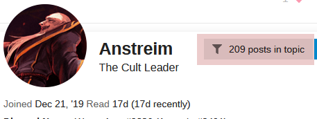

What is Iso?
looking at someone’s posts in isolation from the rest of the thread (you can do this by clicking on their PFP and clicking ‘x posts in topic’)
1 Like
I arrived to the same conclusion last night. I think she’s a more or less safe TL by now.
And Gorta, I’ve already mentioned but he looks like he looked in Randomizer where he replaced into a scum slot – very much on the sidelines, barely any activity. Could still be busy irl but I really want him to come into the thread and do something, because the more time passes, the less I like his silence.
1 Like
This thing.

nope
i didn’t claim
not a lot of copy+paste but ill give you some questions+answer reworded
what did you think of nappy/intensify/gaja/each other/the group of people that are probably gonna be towncore
I also asked Alice if she was jailed.
towncore being refered to - appel/arete/nappy/ans/Jane
and had follow up questions but these are my main/starters/both mode/alice answered
Alice:
nappy good
intensify good, gaja eh
like towncore, ans needs re-eval
likes mode
wont say if she is jailed
sorry this is taking me so long, had to ask scumchat
Mode:
nappy null
newvies no opinion
Arete could be scum but he doesn’t know
doesn’t like ‘towncore’, prompted to make a new one
current consensus townreads have just as much chance of scumhood od someone like Cloned
I still brought ti up first
I literally called him out on not reaching enough conclusions what
not allowed to
1 Like
nobody’s talking
or is my posts not loading in
I believe one want to believe the other
Interesting. I suppose we’ll get to it when he’s in the thread, thank you.
Also, care to answer this one for us here? You don’t have to make it long. Just give us your thoughts to compare.
Mode’s PoV isn’t that narrow, though. But from his reads he looks to genuinely TR me/you/Cheese and maybe Appel. Like, his posts look pretty sincere and he’s actually voicing a belief in his reads.
I didn’t visit Jane last night.
ahem
forgot to mention this bit
i forgot to put mode in my readslist yesterday
i actually forgot, not and RT, but nobody called me on it
anyway I think mode is scum
I’m actually going to speed this up by forcing people to claim if they did/did not visit Jane last night.
I’d like everyone to reply to me if they did or did not.
Oh also, I suppose I’ll copypaste my logs from last night that I made in case I would die. Feel free to ask for my opinions on those.
TRs:
Jane.
Napoleon.
Kat.
Arete. Likely town based on EoD. Never W/W with Alice.
CRichard.
Intensify.
TBE.
Appel.Nulls:
Italy. Give him an opportunity to post something AI before lynching him, town Italy becomes obvious fast so long as he actually plays.
Alice. Agree with Arete that her focus feels somewhat narrow. Don’t lynch her D2, but if she’s alive by D3 and hasn’t improved, she should probably die.
Cloned.
Gaja. Dislike them relaying their messages through Intensify.
SDA. Prime invest target. SDA is chaotic and has demonstrated he’s capable as a deepwolf – I think it would make sense to try and solve him with mech, although his EoD was better.SRs:
Gorta. Check this or make him interact with others.
Seth. His tendency to dip and atrocious activity makes me think he actually randed EK. Likely scum but he isn’t our top priority.
I didn’t visit Jane.
1 Like
Player Pool
- CRichard564 (pre-in)
- katze
- TheBlueElixir
- Anstreim
- Intensify
- Italy
- an_gorta_pratai
- Appelsiini
- SirDerpsAlot
- Gaja1234
- Clonedcheese
Claim to have not visited Jane.
- Arete
- Napoleon
Claim to have have visited Jane.
Me and SDA claimed we didn’t visit him as well.
Here:
Wait me too, I didn’t visit Jane last night
1 Like
The real question here is:
Did you visit Jane, Alice? 
Player Pool
- CRichard564 (pre-in)
- katze
- TheBlueElixir
- Italy
- an_gorta_pratai
- Appelsiini
- Gaja1234
- Clonedcheese
Claim to have not visited Jane.
- Arete
- Napoleon
- Anstreim
- SirDerpsAlot
- Intensify
Claim to have have visited Jane.
I actually missed this but oh boy, I guess I’m glad I decided to say I had info
I want to confirm something before claiming but I visited Jane.
3 Likes